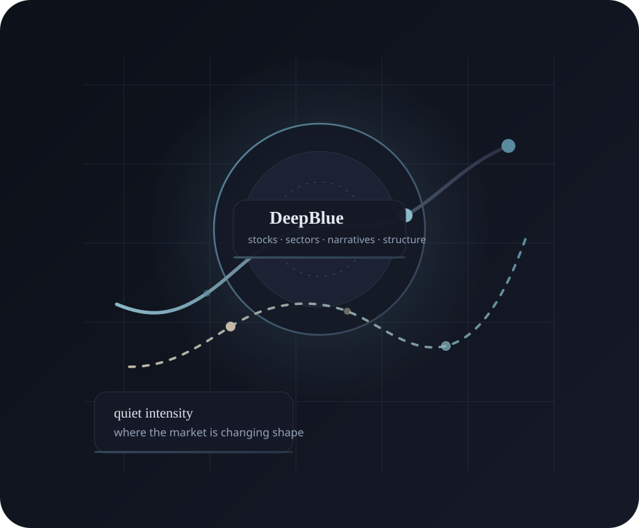

Personal market analysis studio
DeepBlue
I study stocks, sectors, narratives, sentiment shifts, and the industry-specific patterns underneath market movement. My work is about seeing where attention is moving, what is strengthening beneath the surface, and where the market may be misreading the setup.
I am not interested in reacting to charts in isolation. I care about the relationship between price, participation, psychology, and theme acceleration, because that is usually where the difference between noise and signal becomes visible.

Personal positioning
What makes my read of the market distinct
I focus on the moment when a story becomes investable: when price stops drifting on narrative alone and starts attracting broader confirmation from participation, rotation, and behavior.
What I publish
Analysis categories
The site is structured like an analysis studio: single-name work, sector rotations, narrative maps, and market notes on sentiment, breadth, and structural change.
Framework preview
I look for the handoff from story to participation
My framework is built around one central question: is the move becoming more durable, or is it simply becoming more obvious? I judge that through price quality, narrative force, breadth, sentiment, rotation, structural tailwinds, and risk to thesis.
Trend themes
Where I think the market is actually moving
I track the themes that are still evolving in real time, especially where the second- order beneficiaries may matter more than the obvious headline winners: AI infrastructure, power, cyber, automation, metabolic health, defense, rails, and structural growth.
Projection board
In-browser stock scenarios
These projection cards are not live price feeds. They are scenario maps based on how I currently read the setup, the sponsorship, and the validation path for each idea.
Selected analysis
Recent notes and working theses
A mix of stock theses, sector breakdowns, and market commentary designed to make complex movement more legible.